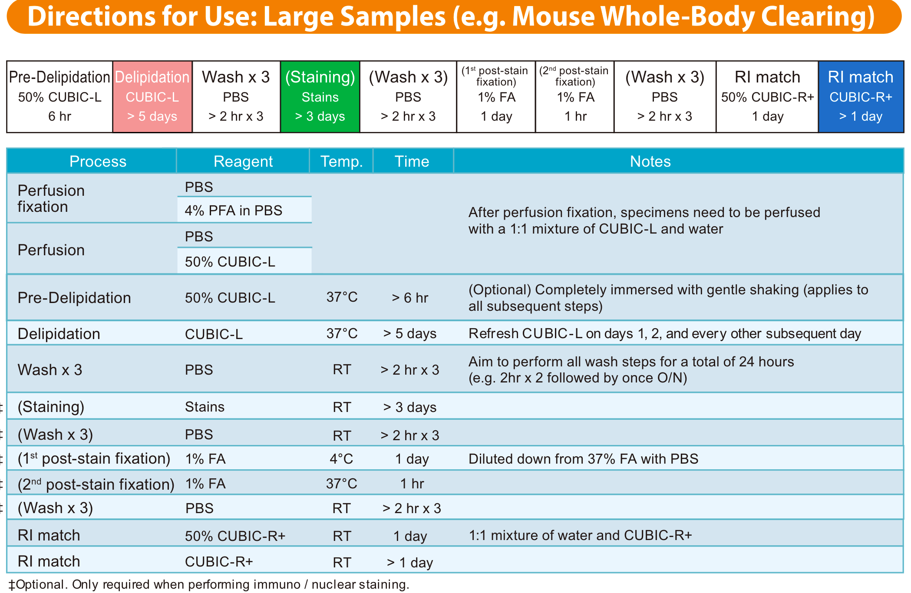
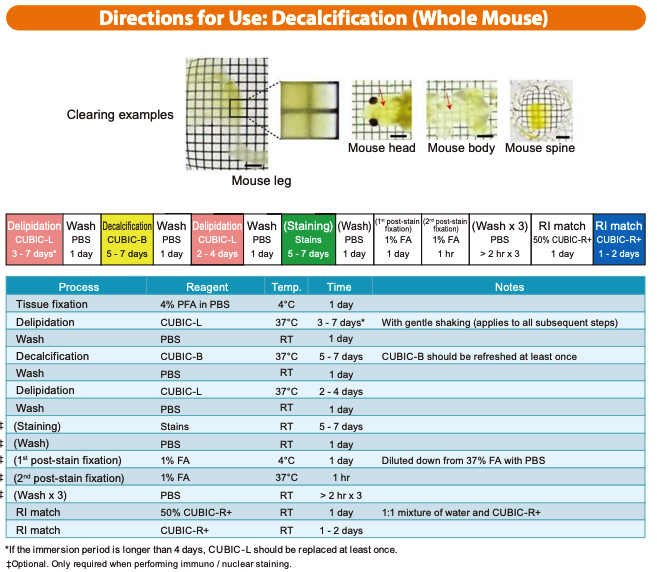
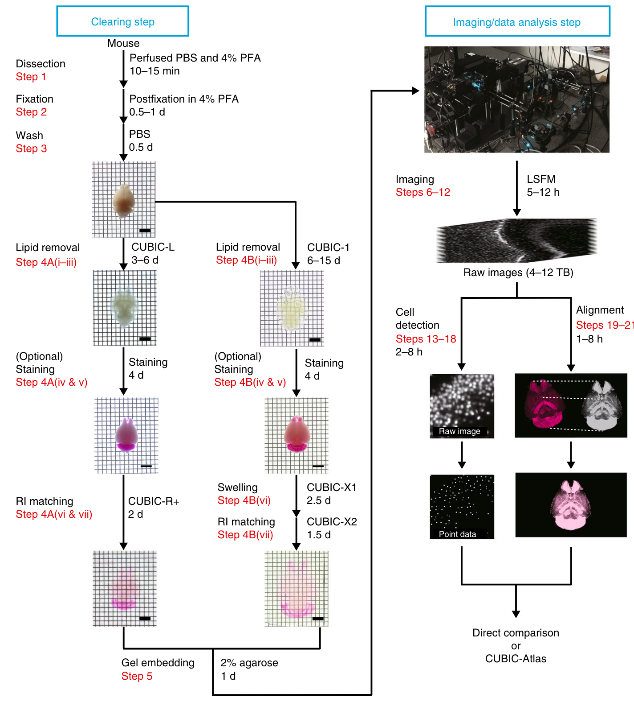
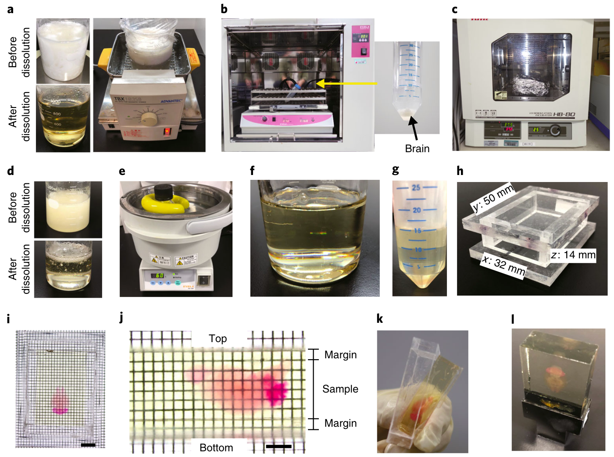

Cubic
Cubic Home Page: Cubic
- Cubic atlas.
- Main article: Matsumoto et al. (2019).
- Cubic Bioinformatics repository.
Protocols
- Basic protocol: Clearing of whole mouse bodies as well as animal organs can be achieved by using two reagents in sequence:
- CUBIC-L [T3740] for delipidation and either
- CUBIC-R+(N) [T3983] or CUBIC-R+(M) [T3741] for RI matching.
The difference between CUBIC-R+(N) [T3983] and CUBIC-R+(M) [T3741]:
CUBIC-R+(N) is inexpensive and easier to handle because it raises less precipitation. The fluorescence signal may decay, but the fluorescence signals of samples in CUBIC-R+(N) can be observed for several days after immersion.
CUBIC-R+(M) is superior in retaining the fluorescence signal. However, at low temperatures such as in winter, it may precipitate. In that case, it can be resolved by placing the sample at 37°C for a few days. For these reasons, it is recommended to try CUBIC-R+(N) first and then use CUBIC-R+(M) if fluorescence signal cannot be found.
Optional protocol: The following products can easily clear tissues, such as bones or highly fatty tissues which were previously difficult to clear. CUBIC-B [T3780] for bone CUBIC-HL [T3781] for highly fatty tissues
For efficiently aiding with perfusion fixation for mouse perfusion: CUBIC-P [T3782]
Expansion protocol: The following products can clear tissues with expansion. (Swell/expand tissues for improved visibility.) CUBIC-X1 [T3866] for expansion tissues CUBIC-X2 [T3867] for RI matching with keeping the expanded size of tissues
For staining thick and large specimens uniformly CUBIC-HV™1 3D immunostaining kit [C3717] for 3D immunostaining CUBIC-HV™1 3D nuclear staining kit [C3709] for 3D nuclear staining
Tissue expansion enables acquisition of images easy.
Preserve the fluorescent protein signals except CUBIC-HL [T3781].
Using light-sheet fluorescent microscopy (LSFM) or confocal laser-scanning microscopy (CLSM) enables the whole-organ / body imaging at a cellular resolution.
Mouse whole-Body Clearing (decalcification??)

Application: Whole Adult Mouse
- Pre-Treatment: 200 mL 50% CUBIC-L at 37°C O/N
- Delipidation: 200 mL CUBIC-L at 37°C for 5 days
- (CUBIC-L refreshed on days 1, 2, and 4)
- Delipidation has reached its endpoint when:
- Partial transparency is acheived
- CUBIC-L remains colorless after incubation with sample
- Delipidation has reached its endpoint when:
- (CUBIC-L refreshed on days 1, 2, and 4)
- Pre-Treatment: 200 mL 50% CUBIC-R+(M) at RT O/N
- RI Matching: 200 mL CUBIC-R+(M) at RT O/N
- Reagent Totals (for a 12 cm x 8 cm x 6 cm container):
- CUBIC-L : 700 mL
- CUBIC-R+(M) : 300 mL Delipidation has reached its endpoint when:
- Reagent Totals (for a 12 cm x 8 cm x 6 cm container):
†Use a container that allows you to submerge your whole specimen.
†For nuclear staining, we recommend using a solution of 30 μg/mL propidium iodide (PI) and 1.5M NaCl in PBS.
FA: formaldehyde, O/N: overnight, PFA: paraformaldehyde, RT: room temperature.
Decalcification (Whole Mouse).

Overview of the advanced CUBIC pipeline in whole-organ cell profiling.

This pipeline comprises three major stages
- Tissue clearing,
- Imaging and
- Image analysis
Two kinds of clearing protocols:
- Rapid and highquality protocol using CUBIC-L and CUBIC-R+ (Step 4A), which takes at least 7 d for adult mouse brain, and
- Tissue expansion protocol for high-resolution imaging using CUBIC-X (Step 4B), which takes up to 21 d for adult mouse brain.
- In addition, both protocols can include staining with an appropriate nuclei-staining dye, which takes 4 d.
- Rapid volumetric imaging can be performed with a customized LSFM with the MOVIE system (Steps 6–12).
- From the collected volumetric images, cells are detected by GPUs and CPUs and converted to point data.
- When analyzing the mouse brain, the result data are analyzed with CUBIC-Atlas.
Procedures for tissue clearing and gel embedding.

- a, Preparation of CUBIC-R+. This reagent can be easily dissolved by mild heating and stirring.
- b,c, An incubator with a shaker (b) and a hybridization incubator (c) that we use for steps requiring temperature control for the clearing procedure; inset shows tube containing brain.
- d, Preparation of 2% agarose–CUBIC solution. Agarose can be dissolved by repeated heating using a microwave and shaking.
- e, A water bath for the degassing step.
- f, 2% agarose–CUBIC solution after the degassing step.
- g, The sample is immersed in 2% agarose–CUBIC solution before gelation.
- h, A mold for gelation. It is designed for mouse brain.
- i, x–y view after gelation. Scale bar, 10 mm.
- j, y–z view after gelation. Scale bar, 5 mm. A margin of 1 mm or more is recommended on the top and bottom of the sample.
- k, Removing the sample gel from the mold.
- l, Fixation of the gel on the customized sample holder. All experiments followed the relevant governmental and institutional guidelines for animal experiments.